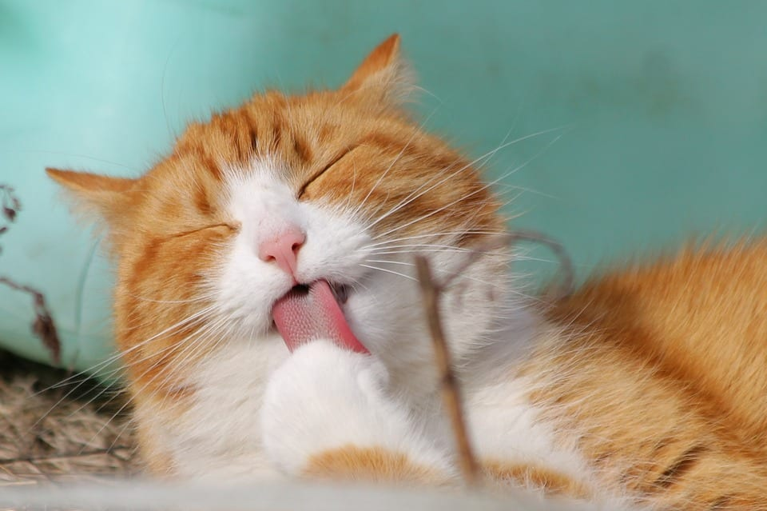
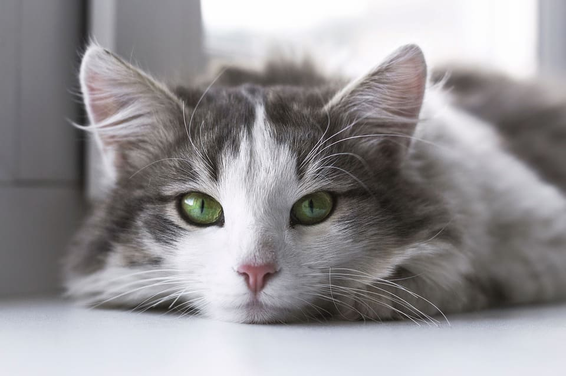
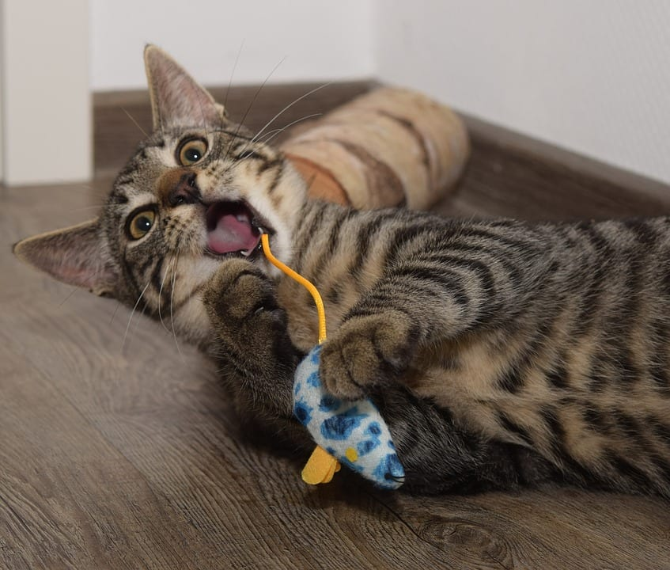
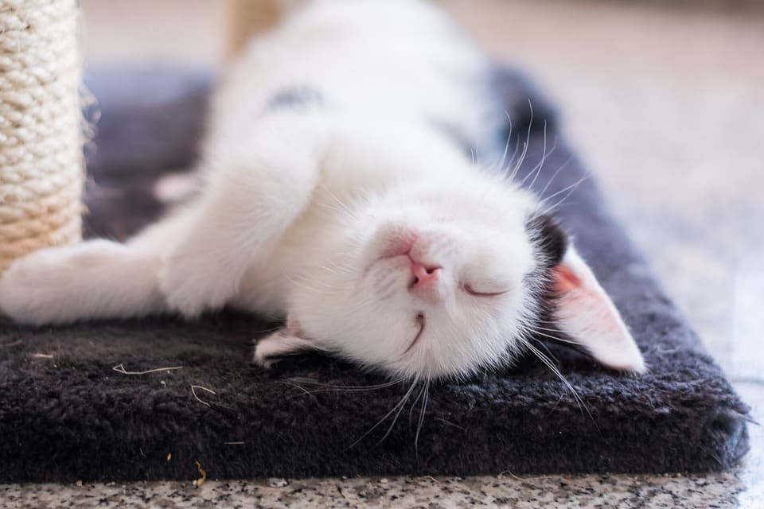
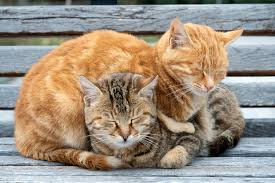
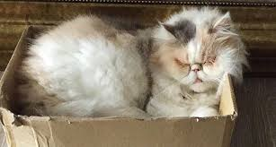
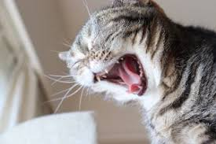
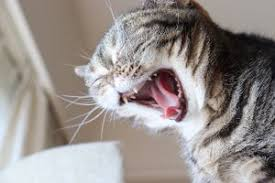

Cats are always nice and clean
Cats spend much of their time grooming themselves, so you will rarely have to bathe your feline friend. Compared to dogs, cats tend to smell much better. Unlike dogs, your cat won’t go outside and roll in unpleasant things or pick a fight with a skunk. Because cats are so good at keeping themselves clean, they usually feel softer and cleaner than dogs and many other animals when you pet them.
Cats are quiet
Even the loudest, most insistent meows are much quieter than most barks. Even when your cat is trying her hardest to annoy you into giving her extra treats, her meow sounds are adorable. You will never have neighbors complaining about your cat meowing too much. It’s hard to be annoyed by such cute little sounds.
Cats Are Super Easy to Potty Train
Cats don’t need to be taken outside in the middle of the night to do their business. Most kittens already know how to use the litter box as soon as you bring them home. Even cats that were born stray or feral instinctively know to bury their waste after going to the bathroom. The most you will have to do to potty train your new furry friend is to show her where the litter box is and show her how to dig in the (clean) litter using your own hand.
Cats Can Be Left Alone Longer Than Dogs
They can be left home alone all day while you are at work without having to worry about coming home to any nasty surprises on your living-room carpet. Cats are also less prone to separation anxiety, so they can tolerate being home for longer periods of time without their human (though it is still best if you have a pair of cats to keep each other company).
Cats Cost Less Than Dogs
The initial adoption fee for cats and kittens is often less than that of dogs. More importantly, cat food, cat toys, and other cat supplies are also generally cheaper than the equivalent for dogs. Cats are smaller than most dogs and require fewer purchases. Vet care is also often less expensive for cats than for dogs.
Cute pictures of cats
 
